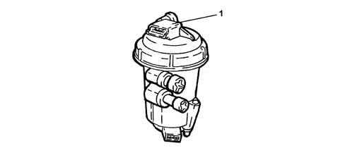

1044D fuel heating device
- Path
- Descriptions > 10 ENGINE > 1044 FUEL CIRCUIT PUMP/AND DEVICES > 1044D fuel heating device
- Kind
- system description
- Applies to
- engines: 1.3 JTD; all production periods
- Interactive page
- https://sloeber94.github.io/elrnDB-lYpsln/en/#/2427397
Applies to: engines: 1.3 JTD; all production periods
FUEL HEATING DEVICE
The fuel filter is equipped with a fuel pre-heating device (1) controlled by the injection control unit on the basis of the signal from the fuel temperature sensor fitted inside the cover.
